Enterprise AI Strategy
Roadmaps that turn AI investment into measurable business outcomes and lasting advantage.
I help organizations turn ambitious ideas into production-ready AI — LLM applications, autonomous agents, cloud infrastructure and MLOps engineered for reliability, scale and measurable business value.
Trusted by teams at global companies
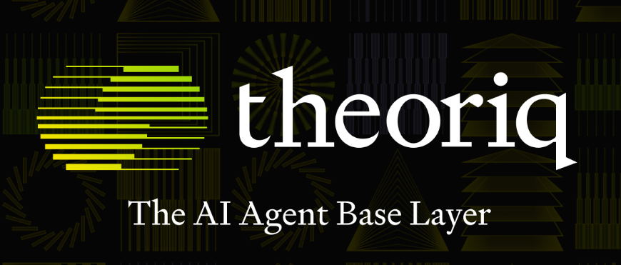
Over the last eight years I've built and deployed machine learning and generative AI across automotive, energy, consulting and enterprise software — from Mercedes-Benz and ExxonMobil to Accenture and LTIMindtree.
Today my focus is the engineering that makes AI real in production: LLM applications, autonomous agents, RAG pipelines, MLOps platforms and cloud AI architecture. I bridge strategy and delivery — designing solutions that are reliable, scalable and tied to clear business outcomes.
End-to-end AI capability — from strategy and architecture to the production systems that run at enterprise scale.
Roadmaps that turn AI investment into measurable business outcomes and lasting advantage.
LLM apps, RAG and creative AI built with OpenAI, Anthropic, LangChain and LlamaIndex.
Autonomous, tool-enabled agents that automate complex multi-step workflows end to end.
Fine-tuning, prompt engineering and evaluation pipelines that make language systems reliable in production.
Detection, classification and inspection models deployed into real-world environments.
CI/CD, monitoring, scaling, and governance for models that run dependably in production.
Architecting AI workloads on AWS, Azure and Databricks for scale, security and cost.
Designing the data, model and infrastructure layers that make AI dependable at scale.
Representative systems I've architected and delivered — the problem, the architecture and the impact.
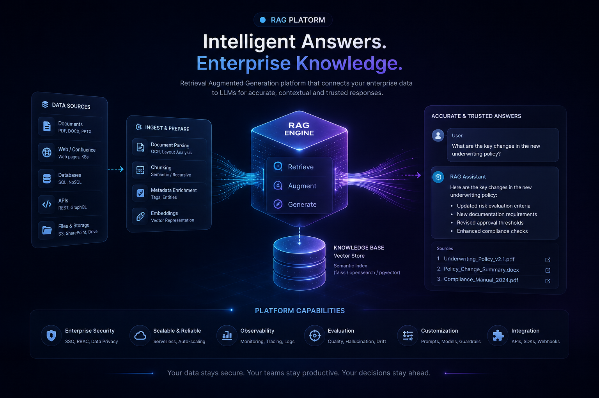
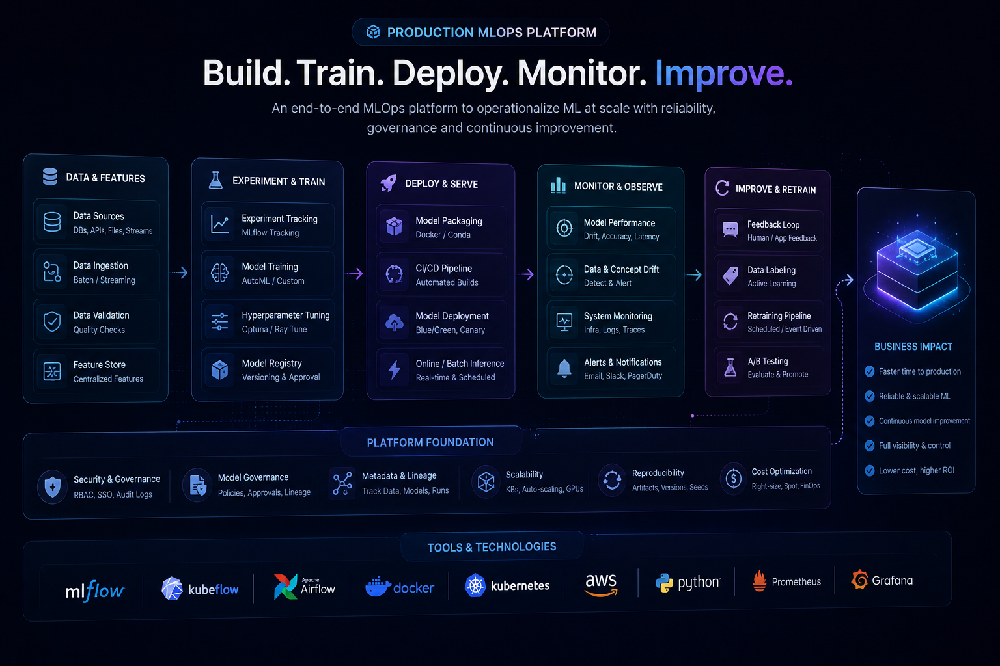
Two interactive demos on this site — an AI assistant that answers questions about my work, and a quiz to test your AI knowledge.
Ask my AI assistant about my experience, projects, and approach to building enterprise AI. It answers in real time.
Open the assistantTen questions across machine learning, deep learning and MLOps — randomly drawn from a growing question bank.
Take the quizThe tools, frameworks and platforms I use to ship production AI.

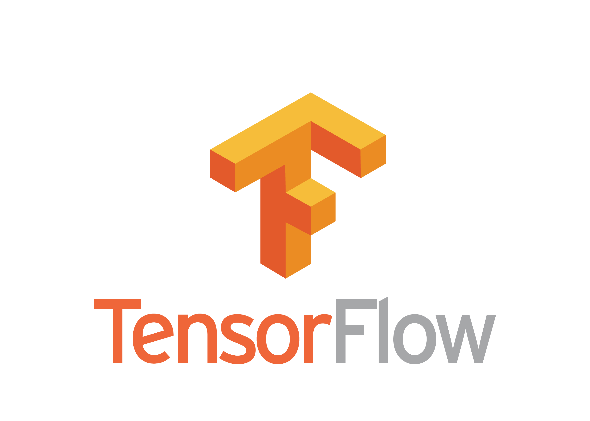

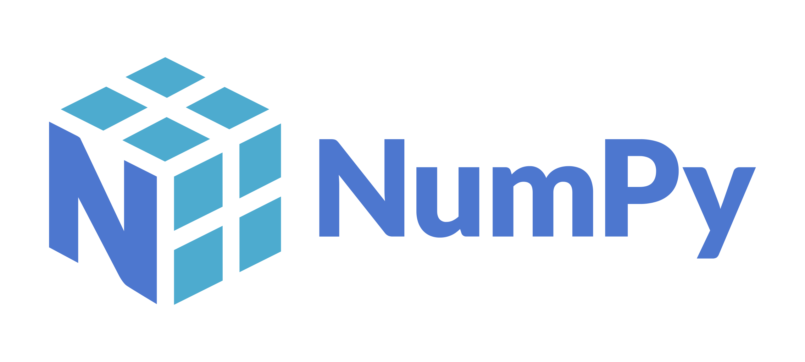

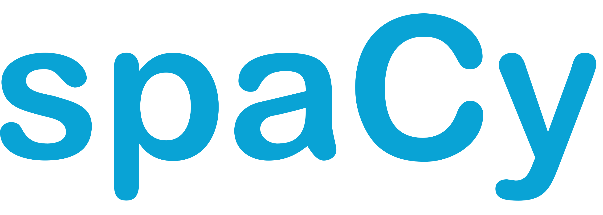
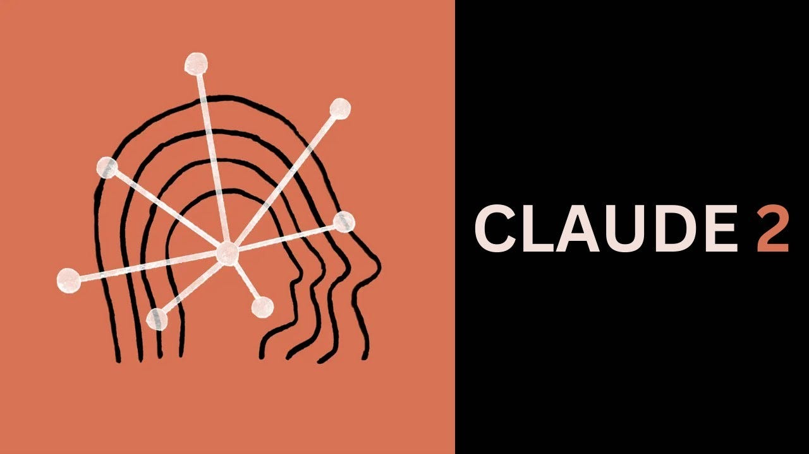
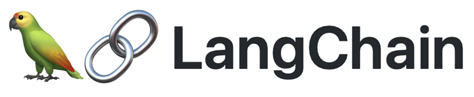
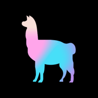
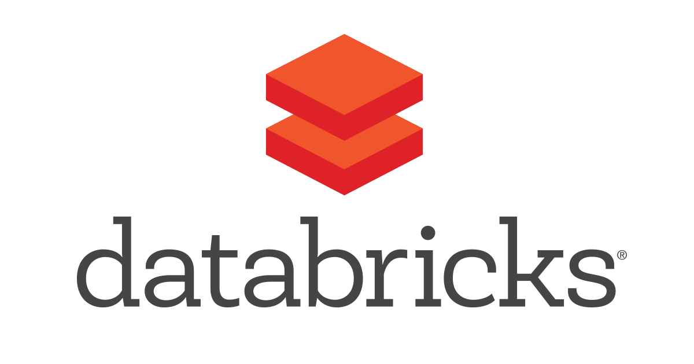
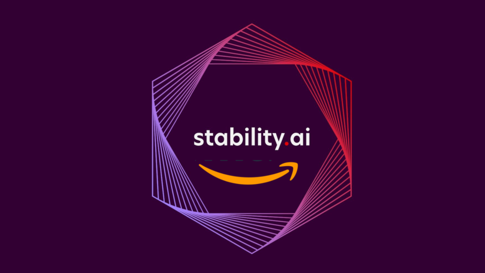
Published with DagsHub, Neptune.ai, Medium and more — translating advanced AI into practical engineering.
Practical strategies to detect and manage duplicate data for optimal model performance.
Read article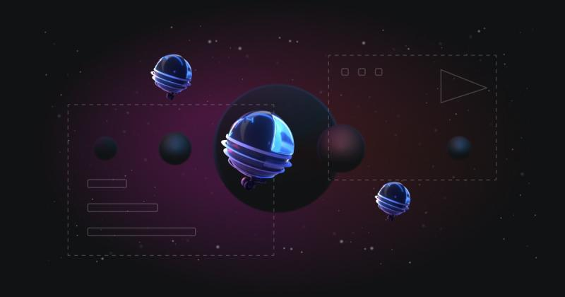
An end-to-end guide to designing continuous delivery pipelines for machine learning.
Read articleHow active learning reduces labeling cost while improving model quality.
Read articleApproaches and trade-offs for shipping computer vision models to production.
Read articleA deep dive into style-based generative adversarial networks and how they work.
Read articleA clear tour of the optimization algorithms that power model training.
Read article“Arun is a dynamic personality who believes in learning cutting-edge technology for problem solving — agile, hardworking and a quick learner. He has strong managerial skills, is a great team player, and you can depend on him to get the task done on time. He will be an asset to any team.
“Arun's exceptional skills in data science greatly contributed to our projects at ExxonMobil. His ability to analyze complex datasets and derive actionable insights was instrumental in driving our strategies forward. He combines technical prowess with a collaborative spirit — a reliable problem-solver and a valued team player.
“I've worked with Arun for three years and he is an exceptional professional. His ability to quickly grasp and implement the latest technologies has been instrumental to our team's success. He leads by example, fostering innovation and continuous learning. I wholeheartedly recommend him to any team looking to push the boundaries of what's possible.
Whether you're scaling AI in production, exploring generative AI, or just want to trade ideas — I'd love to hear from you.
"You can have data without information, but you cannot have information without data." — Daniel Keys Moran